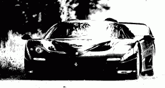

| Autor: | Wojciech Muła |
|---|---|
| Dodany: | 4.03.2002 |
Contents
Konwersja polega na znalezieniu litery, której kształt najlepiej pasuje do fragmentu obrazu. Rzecz jasna należy porównywać obszary o tych samych rozmiarach.
Typowo w trybach tekstowych używa się czcionki o rozmiarze 8x14. Funkcja 0x1130 przerwania 0x10 zwraca adres żądanego generatora znaków.
mov ax, 1130h ; numer funkcji
mov bh, 6 ; wybór generatora
; w tym przypadku to znaki 8x14 z ROM
int 10h ; ES:BP -> wskaźnik do tablicy z definicjami znaków
; CX == wysokość znaków (14)
; DL == ilość linii bieżącego trybu graficznego
Otrzymujemy wskazanie na tablicę o 256 pozycjach, każdy element tablicy ma 14 bajtów (tablica 8x14 bitów).
W razie problemów proszę sprawdzić czy segment ES ma wartość 0xC000 — BIOS (a także ROM karty graficznej) jest kopiowany poczynając od tego właśnie segmentu.
Porównywane będą tablice bitów; stopień podobieństwa wyrażać się będzie liczbą odpowiadających sobie bitów o tych samych wartościach, np.:
obraz: 100110110 znak1: 011001110 znak2: 000111110 obraz xor znak1 = 111111000 obraz xor znak2 = 100001000
Na pozycjach, na których bity obrazu i wzorca znaku są różne znajduje się 1 --- stopień podobieństwa można wyznaczyć licząc zera. Jak widać znak2 lepiej pasuje do obrazu. Polecam lekturę dokumentu 22007.pdf (AMD Athlon Processor/x86 Code Optimization Guide); na stronie 136 zamieszczono opis oraz implementację efektywnego algorytmu obliczania ilości ustawionych bitów (ang. population count).
Należy porównywać fragment obrazu ze wszystkimi wzorcami znaków. Jeśli program ma generować „ładne” pliki ascii, proponuję zastanowić się nad usunięciem niektórych znaków — nie wszystkie dobrze wyglądają. Ze względu na efektywność warto stablicować liczbę bitów dla każdego bajtu.
typedef unsigned char BIOS_character[14]; // siatka znaku
int bits_count[256]; // stablicowane liczby bitów
char best_fit(BIOS_character c, BIOS_character all[256])
{
int best = -1;
int idx
for (int k=0; k<256; k++) // dla wszystkich definicji znaku z tablicy 'all'
{
int bits_num = 0; // liczba ustawionych bitów
for (int i=0; i<14; i++)
// proszę zauważyć, że wynik operacji xor został zanegowany
// oczywiście można zainicjować tablicę 'bits_count' liczbą zer,
// wtedy negacje stanie się zbędna
bits_num += bits_count[~(c[i] ^ all[k][i])];
if (bits_num > best)
{
best = bits_num;
idx = k; // numer znaku
}
}
return idx;
}
Pseudokod użycia funkcji best_fit.
BIOS_character font8x14[256];
for (int y=0; y<25; y++)
for (int x=0; x<80; x++)
{
// pobierz znak z pliku graficznego
// radzę buforować od razu 14 linii obrazu
write_char( best_fit(znak_z_pliku, fon8x14) );
}
Dobrze jest użyć funkcji wypisującej znaki która nie interpretuje znaków sterujących — w przykładzie to jakaś hipotetyczna write_char.
Poniżej efekt konwersji.
Obrazek wejściowy powinien mieć rozdzielczość będącą całkowitą wielokrotnością rozmiaru siatki znaku. Dla trybu 0x03 (80x25) używałem obrazów 640x350x1bpp.